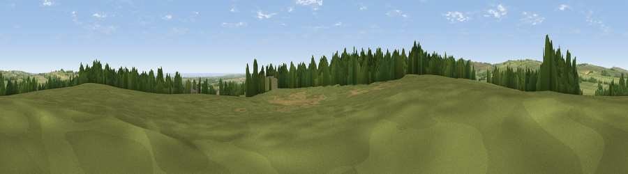

Viewpoint near Swarland
#12831 in England · top 40% of its area beats it · near SwarlandWhere it is
The exact computed spot (NU 16125 04375). Click the marker for map links.
The view, rendered

A 360° render of this exact spot computed from the terrain model, tree cover and land cover — summer colours, afternoon light, calibrated against photographs of famous viewpoints. Real trees, hedges and buildings will differ in detail.
The panorama
Grey silhouette: terrain skyline in each direction (720 bearings, Earth curvature and refraction included). Dashed green: skyline with trees (+15 m) and buildings (+8 m) as obstacles. Blue strip: how far the ground is visible on each bearing.
Where the view opens
Wedge length = distance to the farthest visible ground on that bearing (vegetation-aware). Rings at 10, 25 and 50 km.
What fills the view
71% grassland · 15% cropland · 10% woodland · 3% water ·
Angular shares of the visible panorama (visual magnitude), not map area. Landscape diversity 0.40 (0–1 Shannon).
Key numbers
More beautiful places nearby
The staircase of upgrades: each row has a higher view potential than everything closer. Driving times are estimates from straight-line distance, calibrated against real road routing — check an actual route before setting out.
| Place | Direction | Drive | Score |
|---|---|---|---|
| Viewpoint near Swarland | WNW · 4 km | ~9 min | 70.9 |
| Viewpoint near Newton on the Moor | WNW · 4 km | ~9 min | 74.0 |
| Viewpoint near Longframlington | WSW · 5 km | ~12 min | 79.5 |
| Cloudy Crags | N · 9 km | ~19 min | 80.2 |
| Long Crag | WNW · 10 km | ~20 min | 80.5 |
| Viewpoint near Rothbury | WSW · 13 km | ~24 min | 81.1 |
| Dove Crag | WSW · 14 km | ~25 min | 82.3 |
| Viewpoint near Glanton | NNW · 14 km | ~25 min | 82.9 |
55.33317, -1.74737 · source: screening · position refined by local search. Computed location — check access rights before visiting.